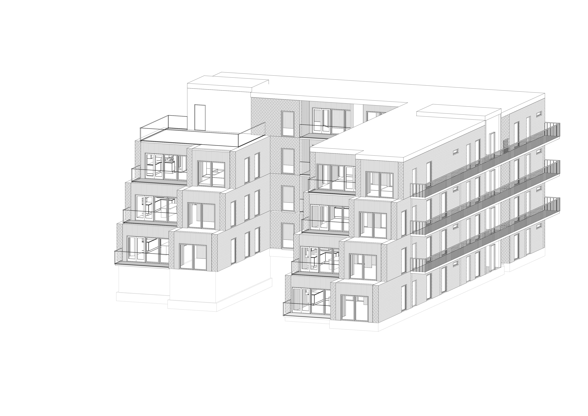

1. SEMESTER
Første semester indledtes med en fokus på tegneteknik, herunder isometrisk tegning og skjulte linjer, med det formål at etablere en grundlæggende forståelse. Herefter påbegyndte vi en opgave vedrørende et dispositionsforslag, hvori vi skulle ideudvikle vores individuelle bolighusdesign. Dette resulterede i udarbejdelsen af en præsentationsplanche.
Mod slutningen af semesteret blev et fælles dispositionsforslag introduceret. Opgaven involverede udviklingen af et enfamiliehus, hvilket udfordrede os til at udnytte manuel tegneteknik til grundige analyser, beregninger og designovervejelser. Denne resulterede i anvendelsen af Revit-software til at skabe detaljerede snit, plantegninger og tekniske tegninger.

2. SEMESTER
Andet semester blev vi præsenteret for en enkeltfamiliebolig med en kælder og en første sal. Vi modtog et dispositionsforslag, der vejledte os i at starte vores undersøgelser med særligt fokus på kælderetagen. Dette omfattede aspekter som opbygning og overholdelse af relevante forskrifter. Efter grundig analyse af kælderetagen fortsatte vi med at undersøge stueetagen og første sal. I løbet af dette semester var vores hovedfokus rettet mod detaljer som kviste, etageadskillelser samt den overordnede struktur af kælderetagen. En bemærkelsesværdig udfordring var, at det var første gang, hele studiegruppen skulle samarbejde om én fælles Revit-fil.

3. SEMESTER
Tredje semester blev vi introduceret til begrebet præfabrikation inden for vores studieretning. I løbet af denne periode påtog vi os forskellige roller såsom projekteringsleder, produktionsleder og byggeleder. Et af hovedpunkterne var vores interaktion med iBinder-platformen, hvor vi faciliterede korrespondance med en anden studiegruppe. Dette semester krævede en betydelig grad af organisatorisk overblik, da vi skulle koordinere forskellige ansvarsområder og opgaver.

4. SEMESTER
tekst kommer
